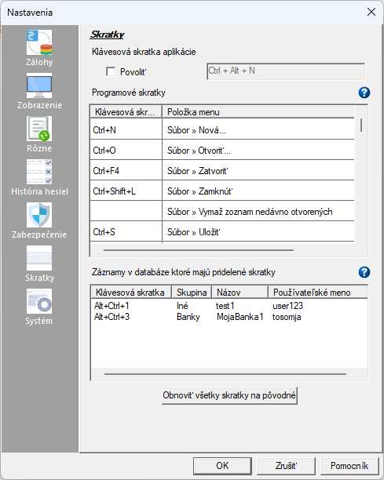

Používateľské mená, heslá a skupiny spolu s ďalšími vlastnosťami sa spravujú na 4 kartách:

Ďalšie poznámky ku klávesovým skratkám pre záznamy:
- Klávesová skratka pre daný záznam je uložená ako súčasť záznamu v databáze. Aplikácia Password Safe má však definované aj klávesové skratky, ktoré zodpovedajú položkám jej menu. Klávesové skratky v menu sa vzťahujú na všetky databázy otvorené daným používateľom na konkrétnom počítači a tento používateľ si ich môže prispôsobiť (menu > Spravovať > Nastavenia, karta Skratky) a môže sa meniť podľa zvoleného jazyka aplikácie, napr. angličtina, nemčina atď.
- Preto, hoci sa zobrazí upozornenie ak vyberiete klávesovú skratku pre záznam, ktorá je momentálne priradená k položke menu, nemusí dôjsť ku konfliktu, ak neskôr prispôsobíte skratky menu alebo zmeníte jazyk zobrazenia aplikácie. Podobne, klávesová skratka pre záznam nemusí byť používaná, keď je pridaná k položke menu, ale môže sa stať konfliktnou, ak neskôr prispôsobíte skratky menu alebo zmeníte jazyk.
- Keďže klávesové skratky pre záznam nemôžu pri použití zmeniť databázu, na rozdiel od napríklad skratky položky menu, ktorá by mohla záznam odstrániť, z bezpečnostných dôvodov majú klávesové skratky pre záznam prednosť pred skratkami položiek menu.
- Klávesová skratka pre záznam musí obsahovať kláves Alt alebo Ctrl (s klávesom Shift alebo bez neho). Ak jeden z nich nie je zahrnutý pri zadávaní hodnoty, vyskúšajú sa všetky kombinácie klávesov Alt, Ctrl a Shift v poradí (Alt; Alt+Shift; Ctrl; Ctrl+Shift, Alt+Ctrl; Alt+Ctrl+Shift), aby sa dosiahla jedinečná kombinácia. Napríklad, ak používateľ zadá "Shift + 6", skratka sa môže zmeniť na "Alt + Shift + 6". Ak však zadáte napríklad "Ctrl + 6", skratka sa nezmení.
- Klávesová skratka sa zo záznamu odstráni, ak je už priradená k inému záznamu v databáze, v nasledujúcich prípadoch:
- Ak je záznam importovaný (prostredníctvom textu alebo XML). Toto bude tiež uvedené v správe o importe.
- Ak je záznam pridaný počas zlúčenia databázy. Toto bude tiež uvedené v správe o zlúčení.
- Ak je záznam presunutý do databázy z inej databázy pomocou Drag & Drop. Toto sa nestane, ak je záznam presunutý v rámci tej istej databázy.
- Ak je záznam skopírovaný do databázy prostredníctvom výsledkov dialógového okna Porovnanie databázy.
- Akýkoľvek záznam vytvorený pomocou akcií "Duplikovať skupinu" alebo "Duplikovať záznam".
Zoznam aktuálne používaných klávesových skratiek pre záznamy sa zobrazí pod klávesovými skratkami súvisiacimi s programom Password Safe v Nastaveniach na karte Skratky cez "Spravovať > Nastavenia". Dvojitým kliknutím na klávesovú skratku v tomto zozname môžete upraviť/zobraziť príslušný záznam. Môžete tiež pridať stĺpec klávesových skratiek pre záznam do zobrazenia "Plochý zoznam" a/alebo vytvoriť filter, ktorý zobrazí iba tieto záznamy s klávesovými skratkami alebo bez nich.
